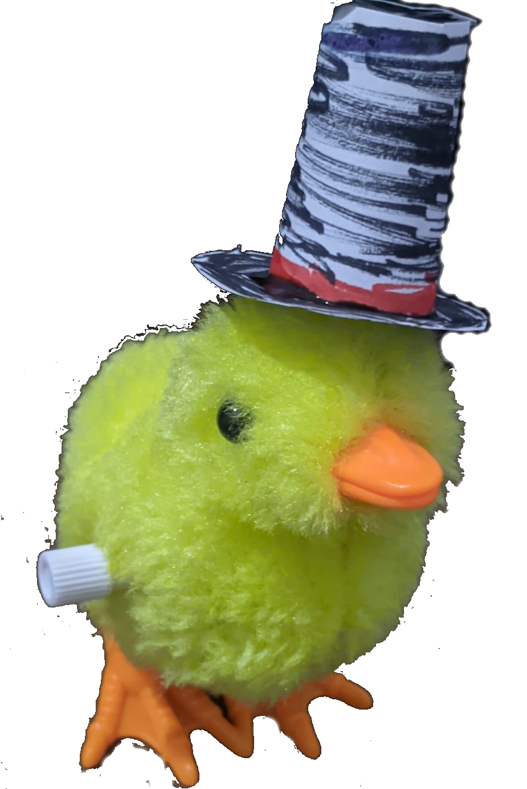

Site dedicado ao querido e tão amado mascote da turma de Desenvolvimento de Sistemas de 2024. O Nano surgiu de uma mera piada com um "pintinho de brinquedo" chamado Mauricio, era um meme interno da sala, mas ao ser compartilhado a sua existência no grupo dos DS e com os professores, ele se tornou popular como é atualmente, todos amamos o Nano.